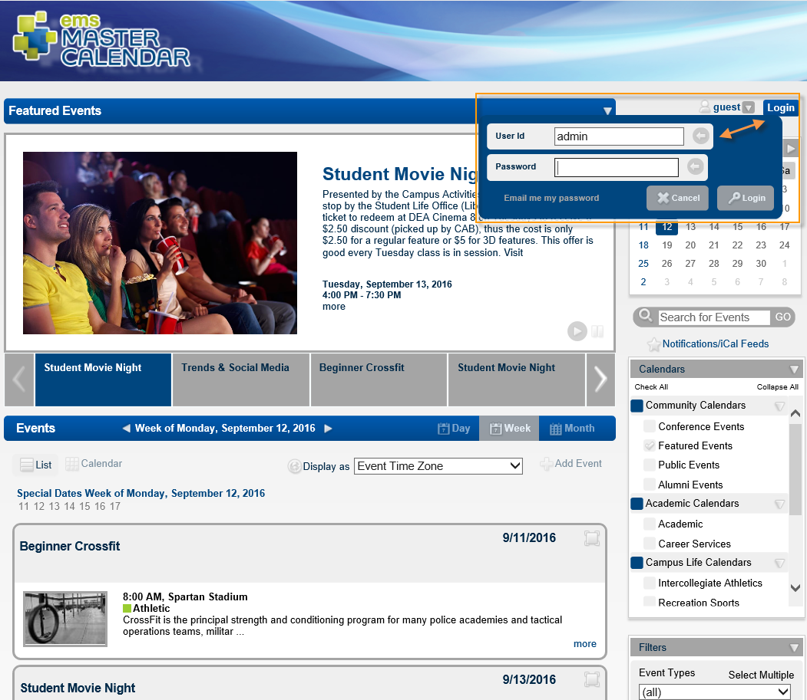
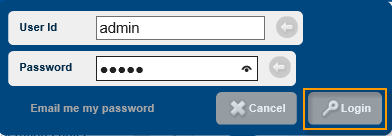

Tip: Your User ID is not the same as your User Name; it is the email address defined for your user account in Master Calendar. If you forget your password and the option Email me my password shows at the bottom of the Login dialog box, click this option to have your full password emailed to you.